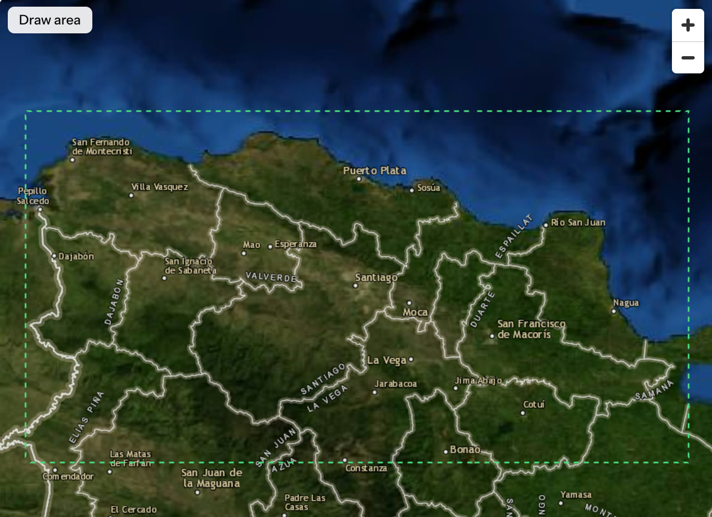
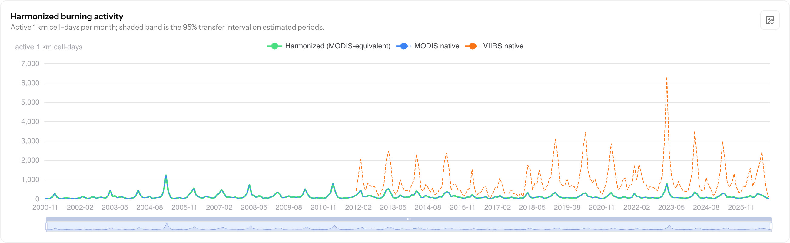
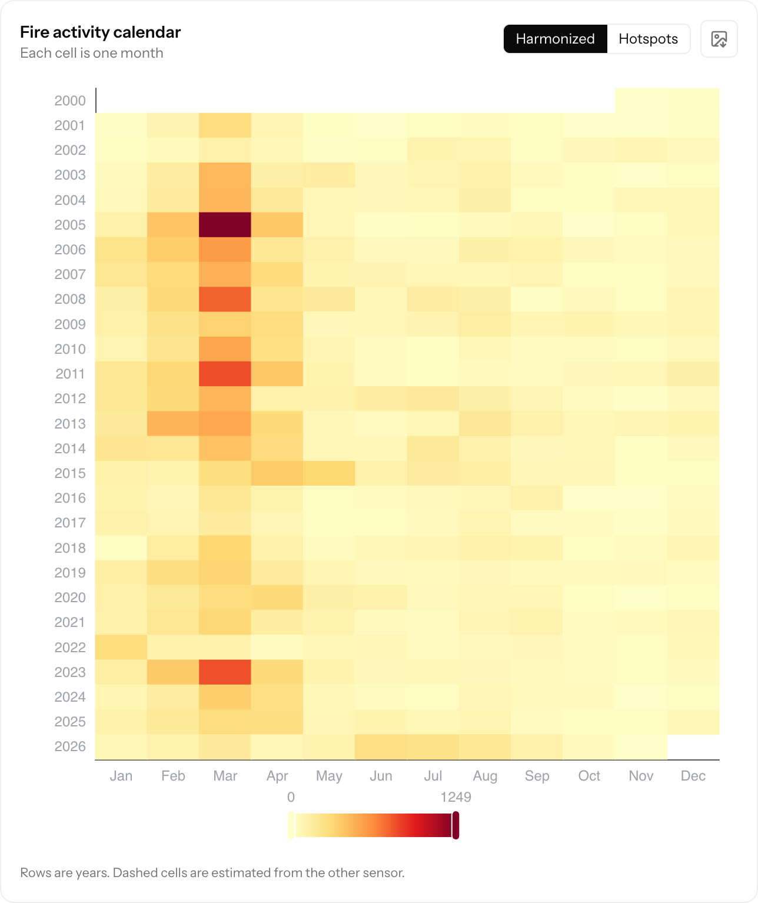
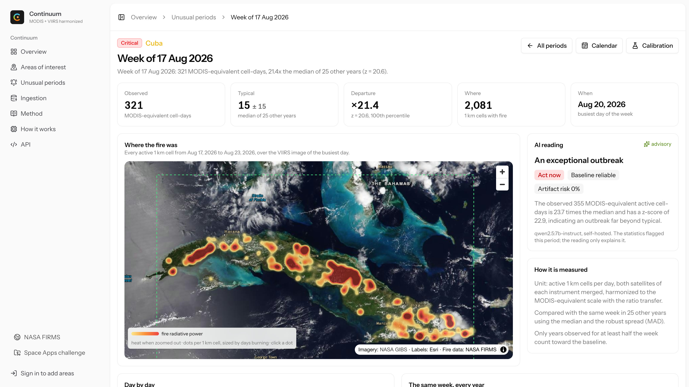

NASA Space Apps Challenge 2026 · Harmonization of MODIS and VIIRS Hot Spots
One fire calendar from 26 years of NASA satellite data
Team Continuum · Elminson & Miguel · Santo Domingo, Dominican Republic

MODIS · since 2000
1 km pixels on Terra and Aqua
VIIRS · since 2012
375 m pixels: about 8× more fire cell-days on Hispaniola
Naive merge
Invents a fire boom in 2012 that never happened
1
One fire front is one cell-day for both sensors.
2
Terra + Aqua; Suomi NPP + NOAA-20 + NOAA-21.
3
Monthly ratio with bootstrap interval, and a fire-power visibility threshold, fitted on 2012–2026.
Error versus a naive merge, every fourth day held out
| Area | Error cut | Test days |
|---|---|---|
| Hispaniola | −89% | 1,352 |
| Cuba | −86% | 1,344 |
| Gran Chaco | −83% | 1,353 |
| Cerrado | −76% | 1,220 |

Choose a public area or draw your own box
Or type its corners in latitude and longitude.
Set the dates, compare with the 25-year median
Hotspots, harmonized activity and how this period ranks against every earlier year.
See the fire season
Hispaniola burns from February to April, peaking in March.
Take it with you
Charts as PNG, the calendar and the raw hotspots as CSV, a public API. English and Spanish.

×21.4
the median of the same week in 25 other years
321 MODIS-equivalent cell-days against a typical 15 ± 15.
Fire trackers reported several wildfires across Cuba on 15–25 August 2026.
26.2 M
NASA FIRMS detections ingested
26 years
November 2000 to today
Hourly
new FIRMS data, re-harmonized every 6 hours
MODIS Collection 6.1
Terra and Aqua, 1 km, standard and near real-time
VIIRS 375 m
Suomi NPP, NOAA-20, NOAA-21; after Suomi NPP stopped on 2 Nov 2026, NOAA-20 and NOAA-21 carry on
NASA GIBS imagery
The same-day satellite image under every fire map
Open source (MIT) · public JSON API · 298 automated tests · github.com/elminson/continuum
Point it at any territory, starting with the Dominican Republic and Haiti.
Keep the 26-year scale when MODIS retires: VIIRS-only data on the MODIS scale.
Add per-cell cloud masks and burned-area cross-checks.
continuum.techspark.dev
Judges: judge@continuum.techspark.dev · SpaceApps2026! · Code: github.com/elminson/continuum